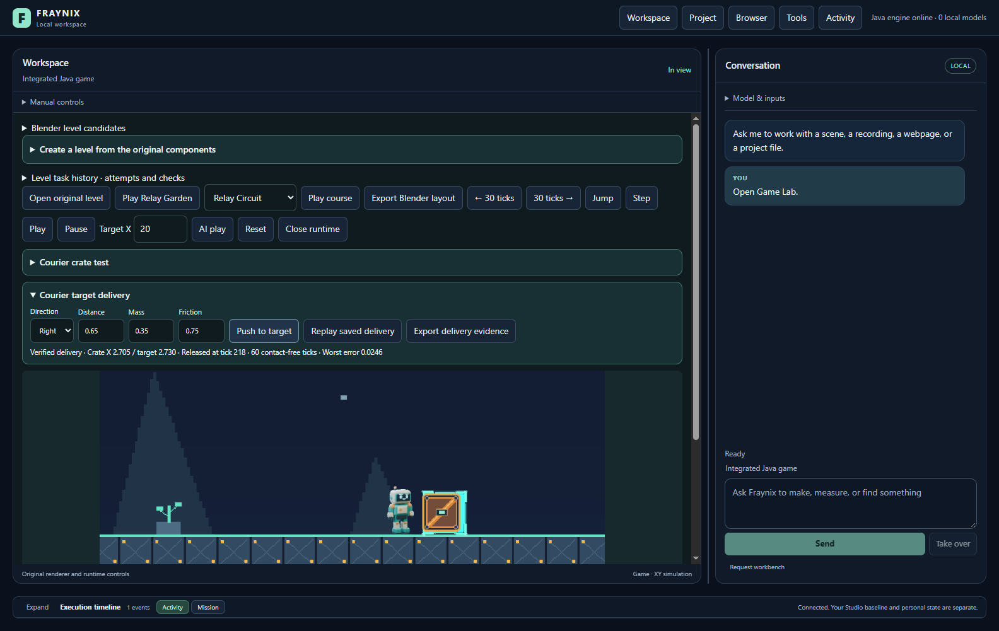
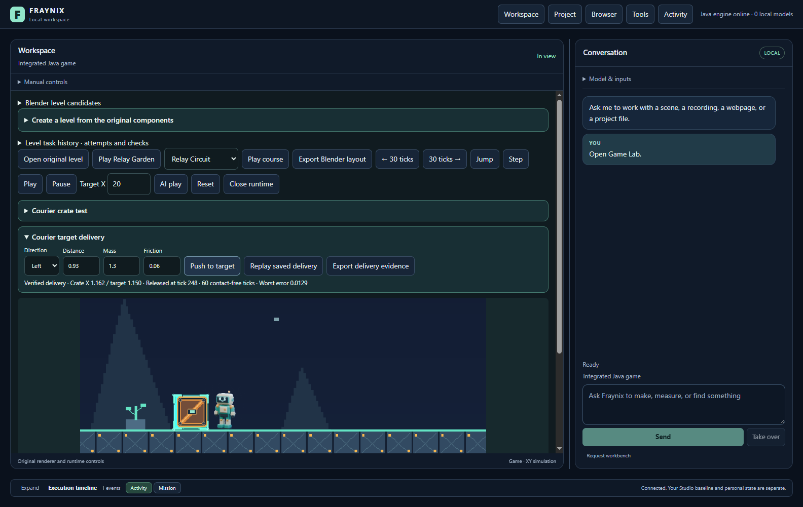
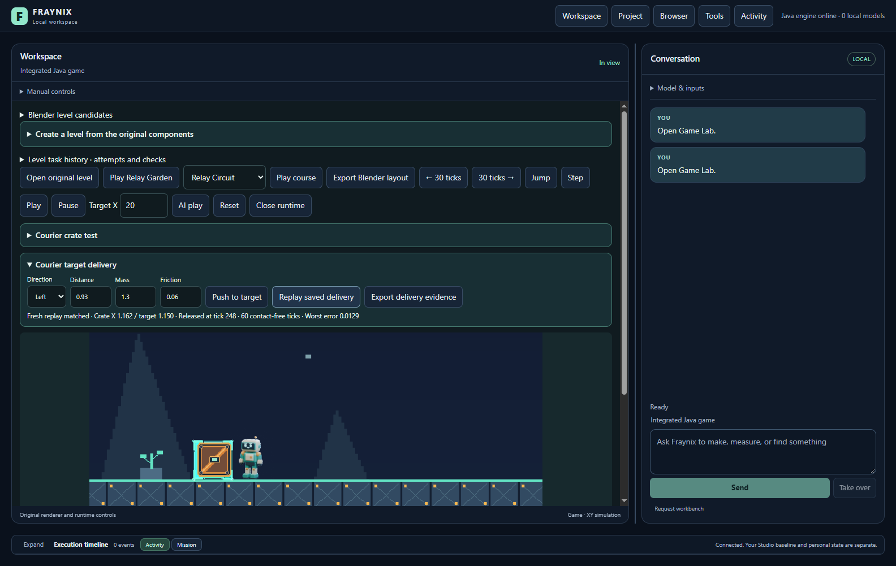

Deliver a crate and verify it stays on target
Open Game Lab and choose Courier target delivery. Set a direction, mass, friction and distance. Review the one-second hold or replay the saved delivery.

Game Lab after the Courier delivers the light crate to the right

A heavier crate delivered to the left with lower friction

Game Lab repeats the left delivery after an offline restart
System files
Open source